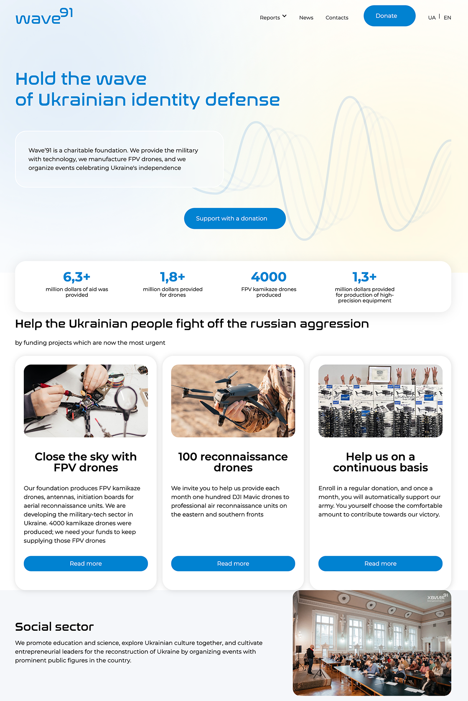
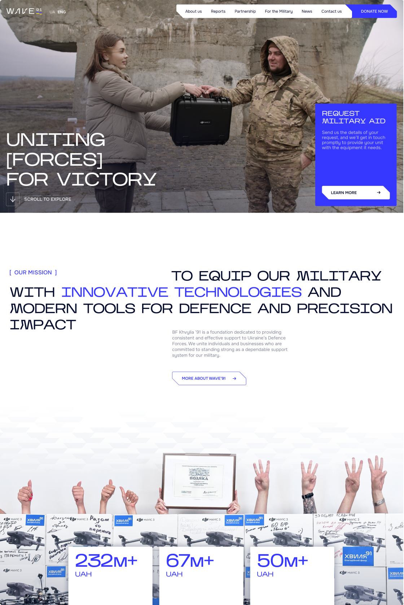
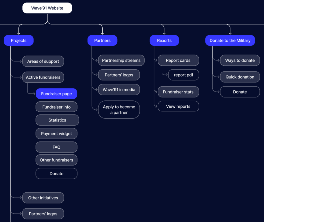
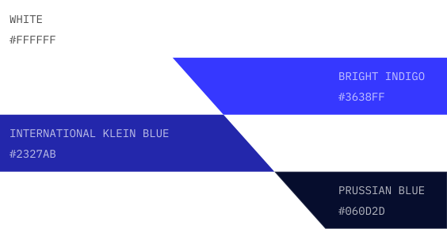
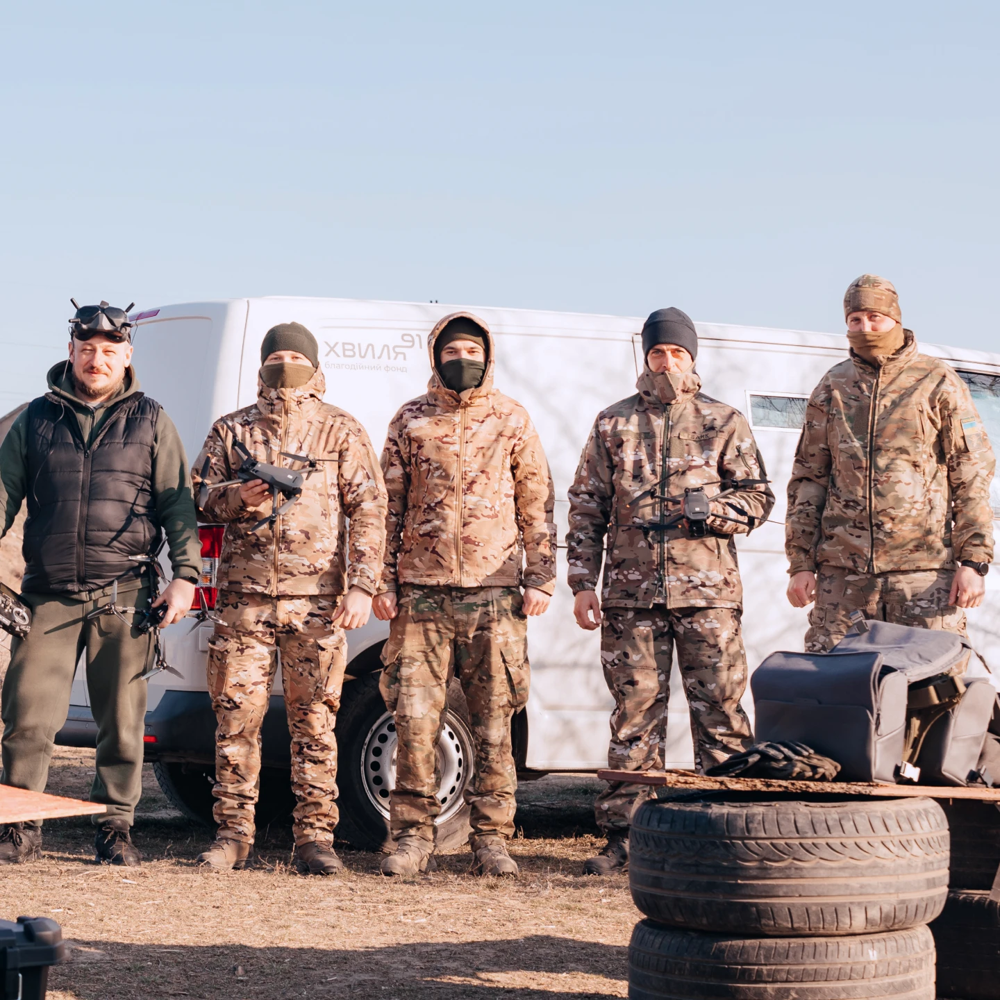

Spider boots, boxers, hoverboards: when Ukrainian troops ask, we deliver
August 12, 2025

CHARITY
FOUNDATION
SITE
REDESIGN


Wave'91 is a Ukrainian charity foundation supporting the country's Defence Forces through advanced military technology and direct collaboration with frontline units.
As the organisation evolved, the website no longer reflected the scale of its impact or effectively communicated its value to donors, businesses, and military personnel. This redesign focused on strengthening trust, improving navigation, and creating a more compelling fundraising experience.
BEFORE



Sensitive content
This photo contains sensitive content, such as poor layout and typography, which some people might find offensive or disturbing.
AFTER

Problem
The existing website had an unclear structure, outdated content, and poor usability.
Users found it difficult to navigate and understand the foundation's projects, which weakened trust and reduced engagement.
The website doesn't show all foundation's initiatives and fails to express it's new positioning as a military-focused charity.
Goals
Help increase donation flow & attract new donors — especially businesses and enterprise partners.
Reorganise and expand the site structure for intuitive navigation and friction-free donation experience.
Using refreshed branding guidelines, design an engaging interface that shows the foundation's values and impact.
Visually convey that the foundation is effective and in direct contact with the military about real-time needs on the ground.

I initially mapped out IA and wireframes based on competitor analysis and client input. Having tested a prototype with both military and donor user groups, I later modified the architecture and content order to suit user needs better, like adding a separate page for the military and adding dedicated CTA banners for each user group.


Inspired by the folding logo geometry and bold, rough aesthetics of the military style, I arrived at the key stylistic decisions: chamfered corners, juxtaposed composition, large typography, and bold colours.


CARD DESIGN ITERATIONS
FINAL VERSION


BUTTON DESIGN


COLOUR PALETTE

[ TYPOGRAPHY ]
I used Onest for body copy. Designed for digital use, it remains legible and consistent at small sizes. It's clean, understated design intentionally contrasts with the bold, confident character of the Kharkiv typeface, creating a clear hierarchy and balanced typographic system.

wave-inspired pattern
transitions between blocks

Testing with 10 users highlighted opportunities to improve clarity, make key content easier to find, and better surface subscription options for more sustainable fundraising.
BEFORE


/01 FOR THE MILITARY
INSIGHT
Military users defaulted to contact page and did not search for relevant info across the site.
SOLUTION
Gathered all relevant information on a dedicated military page; added a clear banner on main page to direct users there.
BEFORE


/02 PRINCIPLES LAYOUT
INSIGHT
Users perceived the principles as a calendar and attempted to interact with it to reveal details.
SOLUTION
Redesigned the layout as a more familiar pattern, added icons to clarify meaning at a glance, and removed hover-based interactions.
BEFORE


/03 ONE-CLICK DONATION
INSIGHT
Users found external links cumbersome and wanted a more seamless donation experience.
SOLUTION
Reduced extra steps from the charity site to the donation page by embedding a native monobank widget directly into the fundraiser page.


To reduce donor uncertainty and strengthen trust, I prioritised tangible proof of impact through frontline photography, delivery evidence, and prominent impact metrics. This helped communicate credibility quickly without relying on lengthy explanations.


August 12, 2025
April 2, 2025

September 7, 2024

March 24, 2024



To encourage momentum, I designed fundraiser cards that visually fill as donations grow, inviting users to chip in and help complete it, making their contribution feel tangible and immediately impactful.

The CTA invites businesses to place their logo alongside others and help bring Ukraine's victory closer. The wording reinforces a sense of unity and collective responsibility, making partnership feel meaningful rather than transactional.
[ SUPPORT FOR
FRONTLINE UNITS ]
 39TH COASTAL
39TH COASTAL 95TH AIR ASSAULT
95TH AIR ASSAULTWe provide around 200 units with both protective and strike gear — including reconnaissance and strike drones, electronic warfare (EW) and signals intelligence (SIGINT) systems, and more.
 1ST PRESIDENTIAL
1ST PRESIDENTIAL SEPARATE
SEPARATE KRAKEN REGIMENT
KRAKEN REGIMENT
 28TH MECHANISED
28TH MECHANISED REVENGE GROUP
REVENGE GROUP
 25TH AIRBORNE
25TH AIRBORNE SPECIAL GROUP
SPECIAL GROUPcombat units
[ SUPPORT FOR
FRONTLINE UNITS ]
We provide around 200 units with both protective and strike gear — including reconnaissance and strike drones, electronic warfare (EW) and signals intelligence (SIGINT) systems, and more.
39TH COASTAL
95TH AIR ASSAULT
1ST PRESIDENTIAL
SEPARATE
KRAKEN REGIMENT
28TH MECHANISED
REVENGE GROUP
25TH AIRBORNE
SPECIAL GROUPcombat units


contact form


spec cards


Results
The client approved the final design direction and described it as "a distinctive and compelling design that best captures the spirit and core mission of the foundation."
The website was expanded from 4 to 11 pages in two languages, along with a mobile version, and required close collaboration across design, client feedback, and development. The project is now in production, with launch planned for April 2026.

KEEP EXPLORING

Redesign for a home appliance store. Improved UI, navigation, and product discoverability.
VIEW CASE